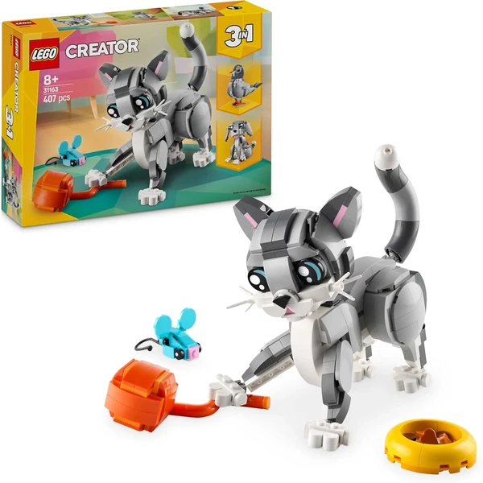
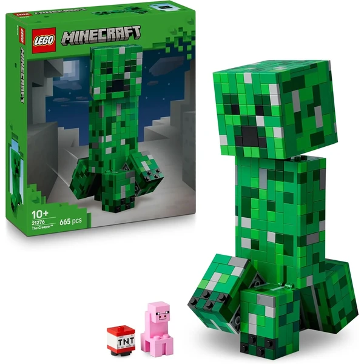
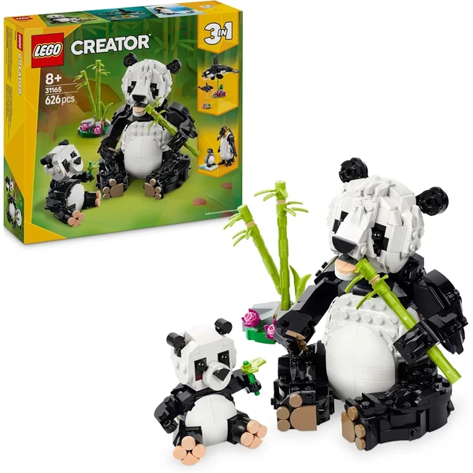
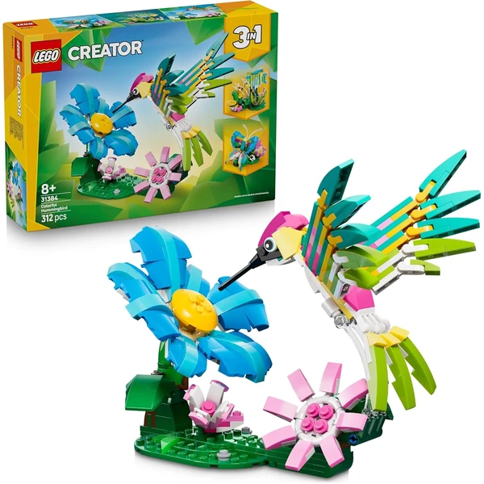
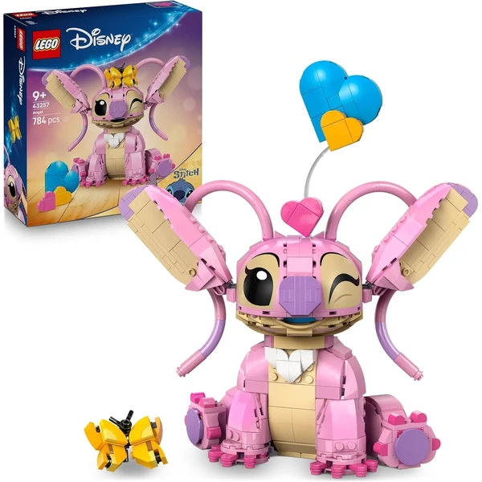
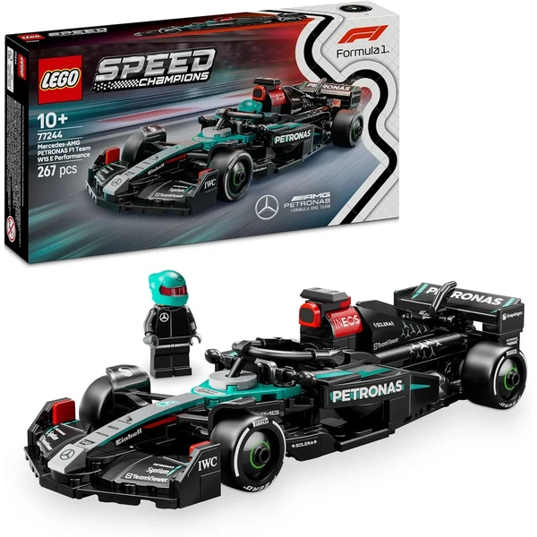
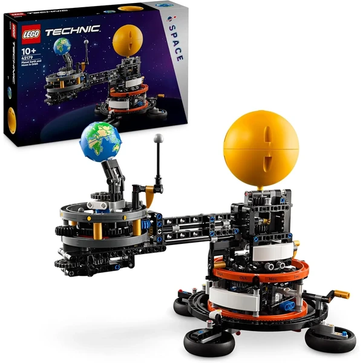

A los 10 años los sets de LEGO más avanzados, con piezas técnicas, motores o incluso control remoto, permiten proyectos de gran envergadura que pueden llevar varios días de montaje. El niño ya planifica el proceso, organiza las piezas por fases y disfruta tanto de construir como de personalizar sus creaciones. En esta selección encontrarás sets de LEGO pensados para esta edad.
¿Qué desarrolla LEGO a los 10 años?
Organizar el montaje por fases en un proyecto de varios días exige planificación y una visión de conjunto madura.
- Pensamiento lógico
- Planificación
- Creatividad
- Motricidad fina
- Concentración
- Constancia

LEGO Creator Gato Juguetón 3 en 1
Un set versátil que permite construir tres mascotas diferentes con los mismos ladrillos: un gato juguetón, un perro alegre y una paloma curiosa. Cada animal es totalmente articulado con movimiento en cabeza, patas y cola, ofreciendo múltiples opciones de juego con una sola caja.
⭐ ¿Por qué nos gusta?
- ✔ Tres mascotas diferentes en un único set.
- ✔ Figuras completamente articuladas y móviles.
- ✔ Viene con accesorios para cada mascota.
💬 Lo que más destacan las familias
Los padres valoran especialmente que ofrece valor de juego prolongado gracias a las tres opciones de construcción. Los niños disfrutan de la versatilidad y la capacidad de crear diferentes historias con cada mascota.
Ver en Amazon

LEGO Minecraft Creeper Articulado
Una réplica construible del icónico Creeper de Minecraft con cuatro patas móviles y cabeza articulada que gira e se inclina. Incluye un compartimento sorpresa en la cabeza que revela un Creeper de edición antigua con dinamita, ideal como decoración de gaming room.
⭐ ¿Por qué nos gusta?
- ✔ Réplica fiel del personaje de Minecraft.
- ✔ Compartimento sorpresa con piezas exclusivas.
- ✔ Perfecta como decoración para estantería o escritorio.
💬 Lo que más destacan las familias
Los fans de Minecraft están encantados con el nivel de detalle y la fidelidad al videojuego. El compartimento sorpresa es un toque especial que añade valor, y el tamaño lo hace perfecto para coleccionar o decorar.
Ver en Amazon

LEGO Creator Fauna Salvaje Pandas 3 en 1
Un hermoso set que permite construir tres familias de animales: pandas con cachorro, orca con cría, y pingüino con polluelo. Cada animal es articulado con movimiento en cabeza, patas y aletas, y viene con bases expositoras transparentes para la familia de orcas.
⭐ ¿Por qué nos gusta?
- ✔ Tres familias de animales diferentes.
- ✔ Figuras totalmente articuladas y detalladas.
- ✔ Bases expositoras para crear un display.
💬 Lo que más destacan las familias
Las familias adoran la belleza de los modelos animales y su realismo. El hecho de que sean coleccionables en una estantería añade valor decorativo, y la variedad de animales mantiene el interés de juego durante mucho tiempo.
Ver en Amazon

LEGO Minecraft Casa-Cerdo Bebé Granja
Una granja completa basada en Minecraft con casa-cerdo baby, huerto para patatas y remolachas, y cerca. Incluye minifiguras de héroe con aspecto de lobo, cerdo bebé, cerdo adulto, abeja y Piglin Zombi. Perfecta para reconstruir escenas del videojuego en el mundo real.
⭐ ¿Por qué nos gusta?
- ✔ Recreación fiel de una granja de Minecraft.
- ✔ Incluye cinco minifiguras diferentes.
- ✔ Detalles interactivos como huerto y mesa de trabajo.
💬 Lo que más destacan las familias
Los fans de Minecraft valoran la exactitud de los detalles y las posibilidades de juego narrativo. El tamaño es ideal para llevarlo de un lado a otro, y las minifiguras múltiples permiten crear historias complejas.
Ver en Amazon

LEGO Creator Colibrí de Colores 3 en 1
Un set colorido con tres opciones de construcción: colibrí en vuelo dinámico, mariposa y pez tropical. Cada figura es articulada y viene con su propio soporte expositivo decorado con flores o plantas submarinas, perfecto para decoración de habitación.
⭐ ¿Por qué nos gusta?
- ✔ Tres animales de colores brillantes.
- ✔ Cada uno con su soporte decorativo único.
- ✔ Figuras articuladas y realistas.
💬 Lo que más destacan las familias
Las familias destacan la belleza de los colores y lo atractivo de los soportes expositivos. Es especialmente popular entre quienes buscan decoración natural y elementos de construcción que no sean típicamente temáticos.
Ver en Amazon

LEGO Speed Champions Máquina del Tiempo Regreso al Futuro
La icónica máquina del tiempo DeLorean de Regreso al Futuro, construible en dos versiones: el modelo original con pararrayos y el versión voladora con ruedas abatibles y Mr. Fusion. Incluye minifiguras de Marty McFly y Doc Brown para recrear escenas de la película.
⭐ ¿Por qué nos gusta?
- ✔ Dos configuraciones diferentes de construcción.
- ✔ Réplica exacta del coche de la película.
- ✔ Minifiguras coleccionables de personajes principales.
💬 Lo que más destacan las familias
Los fans de Regreso al Futuro están encantados con la precisión de los detalles y las dos opciones de construcción. Las minifiguras de Marty y Doc son especialmente valoradas, y el coche es una pieza de colección impresionante.
Ver en Amazon

LEGO Disney Ángela Lilo y Stitch
La adorable amiga rosa de Stitch, Ángela, en forma de figura LEGO articulada con orejas móviles y cabeza giratoria. Incluye accesorios intercambiables como una mariposa y tres corazones flotantes para personalizar la figura y crear un display decorativo único.
⭐ ¿Por qué nos gusta?
- ✔ Personaje adorable y bien detallado.
- ✔ Figura completamente articulada.
- ✔ Accesorios intercambiables para personalizar.
💬 Lo que más destacan las familias
Los fans de Lilo y Stitch valoran mucho la representación fiel del personaje de Ángela. El factor de colección es grande, especialmente si ya se tienen otros personajes de Disney LEGO, permitiendo crear un pequeño universo Disney construible.
Ver en Amazon

LEGO Speed Champions Mercedes-AMG F1 W15
Una maqueta detallada del monoplaza Mercedes-AMG PETRONAS F1 Team 2024, con todos los detalles de diseño del modelo actual: pegatinas de patrocinadores, neumáticos Pirelli, orificios de ventilación y más. Incluye minifigura de piloto con traje y casco del equipo.
⭐ ¿Por qué nos gusta?
- ✔ Réplica exacta del modelo 2024 de Mercedes.
- ✔ Detalles de gran realismo y precisión.
- ✔ Minifigura de piloto coleccionable.
💬 Lo que más destacan las familias
Los amantes de la Fórmula 1 están encantados con la precisión de los detalles y la actualización al modelo 2024. Es un objeto de colección impresionante que se disfruta tanto construyendo como exponiendo en una estantería.
Ver en Amazon

LEGO Technic Planeta Tierra y Luna en Órbita
Un modelo interactivo de astronomía que recrea el sistema Tierra-Luna-Sol. Con una manivela, los niños pueden ver cómo la Tierra y la Luna orbitan alrededor del Sol. Incluye detalles impresos de meses y fases lunares para aprender sobre estaciones y ciclos astronómicos.
⭐ ¿Por qué nos gusta?
- ✔ Aprendizaje de astronomía de forma interactiva.
- ✔ Detalles educativos sobre fases lunares.
- ✔ Modelo funcional y decorativo al mismo tiempo.
💬 Lo que más destacan las familias
Los padres valoran enormemente el componente educativo combinado con la diversión de la construcción. Es especialmente apreciado por niños interesados en ciencia y espacio, y funciona tanto como herramienta de aprendizaje como objeto decorativo impresionante.
Ver en Amazon